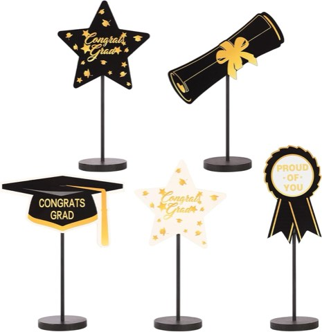

A graduation party can look thoughtfully styled or thrown together in the last five minutes, and the centerpieces are usually what decide which one it reads as.
They anchor the tables, guide the color scheme, and quietly signal that the whole event was actually planned.
A party with simple food and minimal decor can still feel polished if the centerpieces look intentional.
An expensive party can fall flat if the tables look empty and awkward.
The centerpiece is doing more work than it usually gets credit for.


Black Gold Wooden 2026 Graduation Centerpieces, 5 Pcs, Class Party Decorations
Shop on AmazonChoosing Without Overthinking It
Starting with the graduate settles most of the decision, bold colors or neutral tones, something fun or more sentimental, proud of their school or already focused on their next chapter.
A centerpiece that reflects the actual person feels more meaningful than a generic pick off a list.
Size matters too: oversized pieces block conversation, while tiny ones disappear entirely, so eye-catching without being in-your-face is the right target to aim for.
And it is worth keeping cleanup in mind from the start, anything that becomes a chore the next morning is not really worth the trouble it saved on party day.
16 Graduation Party Centerpiece Ideas
1. Balloon Weight Centerpieces
For something with real energy, a balloon weight centerpiece brings instant height, color, and movement to a table.
Graduation-themed foil balloons, kept to two or three colors max, anchored by a stylish weight or box, keep a table feeling full without tipping into cluttered.
These suit a casual party, an outdoor event, or a larger guest list where visual impact matters fast, just stopping short of so many balloons that festive turns into chaotic.
2. Personalized Keepsake Centerpieces
For a centerpiece that genuinely lives on past the party, a keepsake design is worth the extra planning it takes to pull off.
Mini frames with a meaningful quote, a customized ornament, or a small plant with a tag all give guests something to take home instead of leaving behind on the table.
It takes more effort upfront, but it leaves a lasting impression, guests feel appreciated, and nothing ends up in a trash bag once the party winds down.
3. Candy-Filled Centerpieces
Decor that doubles as a snack earns automatic bonus points, and a candy-filled centerpiece solves two problems at once.
Clear containers filled with candy that matches the party's color palette, finished with graduation-themed labels, look intentional rather than like a leftover bowl someone grabbed at the last minute.
These fit casual parties, open-house-style events, and kid-friendly celebrations especially well, guests grab a handful while chatting instead of hovering awkwardly near a snack table.
4. Minimal Acrylic Sign Centerpieces
When louder decor risks overwhelming the space, a minimal acrylic sign keeps things clean, modern, and genuinely stylish instead.
The graduate's name, the graduation year, or a short inspirational quote displayed simply lets the rest of the table's elements actually shine without competing for attention.
This option suits a modern, neutral, or more upscale party especially well, decor that whispers instead of shouting.
5. Travel-Themed Centerpieces
For a graduate heading off to college or a new city, a travel-themed centerpiece captures that forward-looking excitement well.
A small globe or map, a mini suitcase, or a few postcards highlighting future destinations all point toward what is coming next rather than just what is already finished.
This theme suits an adventurous personality especially well, or really any graduate moving somewhere far from home.
6. School Pride Centerpieces
School pride never really goes out of style, and a centerpiece built around school colors and logos feels relevant no matter the overall party theme.
Mini pennants or flags, a logo displayed on a small stand, or those colors paired against a neutral base all showcase that loyalty clearly.
These work well spread across multiple guest tables, especially at a larger party, and quietly celebrate where the graduate came from as much as where they are headed.
7. Candle Centerpieces With Graduation Details
Candles create instant atmosphere on their own, and a few graduation-specific details turn them into something clearly purposeful rather than generic decor left over from another event.
Pillar candles in school colors, small graduation cap charms, and a bit of greenery or beads surrounding the base soften the whole table.
LED candles are worth using around a crowded table for safety, the ambiance still comes through without any open flame risk.
8. Trophy-Inspired Centerpieces
Graduation deserves a little applause, and a trophy-style centerpiece leans into celebrating the achievement without tipping into cheesy territory.
Plastic or metallic trophies, customized with funny or meaningful titles, paired with florals or confetti around the base, add real personality to the table.
These work especially well at a laid-back or high-energy party, particularly when the humor on the trophy actually matches the graduate's own personality.
9. Memory Jar Centerpieces
Some centerpieces just sit there looking nice.
A memory jar actually invites guests to participate, which makes it stand out immediately from everything else on the table.
Clear jars with decorative labels, a small stack of pens and cards nearby, and a simple instruction sign turn the table into a quick, easy activity.
Guests write advice or well-wishes, and the jar becomes a genuine keepsake the graduate can look back on long after the party's over.
10. Mason Jar Centerpieces
Mason jars keep showing up for a reason, they are versatile, affordable, and genuinely charming once styled with a little intention.
Filling jars with fairy lights, tucking in a rolled diploma, or painting them in school colors all give a familiar object a graduation-specific twist.
They suit a backyard party, an evening celebration, or anything leaning rustic, and create a warmer, less formal feel than most other options on this list.
11. Graduation Year Number Centerpieces
For something bold, a large graduation year number anchors a table visually in a way nothing subtle can really match.
Glittered wooden numbers, clear numbers filled with confetti or string lights, or numbers paired with florals or balloons all make the year the obvious focal point.
These work well on a main table, dessert station, or welcome table, and they photograph beautifully from almost any angle in the room.
12. Book Stack Centerpieces
This one leans academic, and it is a strong fit for a graduate heading into law, medicine, teaching, or any other books-heavy field.
Three to five hardcover books stacked, topped with a graduation cap or candle, tied together with twine or ribbon in school colors, makes for a genuinely smart-looking display.
It celebrates the journey rather than just the finish line, which tends to be the detail guests actually comment on.
13. Floral Centerpieces With a Graduation Twist
Flowers almost always work, but a graduation centerpiece needs more than just a vase on its own to feel genuinely tied to the occasion.
A bouquet in school colors, a small graduation cap pick tucked in, or a vase wrapped in graduation ribbon turns an ordinary arrangement into something clearly connected to the event.
Faux flowers work just as well if budget is a concern, nobody notices the difference from across the table, and they can be reused afterward.
14. Photo Cube Centerpieces
Photo cubes earn real engagement at a party, guests end up walking table to table just to look at the pictures displayed on each one.
Mixing childhood photos with recent ones, using high-quality prints, and adding the graduation year on one side keeps each cube genuinely interesting to browse.
These shine at sit-down parties where guests actually linger at their tables, creating a quiet emotional moment without ever feeling forced.
15. Diploma Scroll Centerpieces
For a centerpiece that actually means something rather than just looking good, a rolled diploma scroll delivers an emotional note most other options miss entirely.
Parchment-style paper rolled and tied with ribbon, a small tag with the graduate's name and year, standing upright in a jar or vase, keeps it simple but genuinely symbolic.
These work beautifully on a memory table or food table, and pair naturally with photos or candles placed nearby.
16. Graduation Cap Centerpieces
If graduation centerpieces had a hall of fame, this one would headline it.
It works for every age, every theme, and every budget without exception.
Mini caps on sticks, caps paired with flowers or balloons, or caps featuring the graduation year or school colors all read as instantly celebratory with zero explanation needed.
These shine on a dessert table, gift table, or any round guest table, and a tassel matching the school color is the small detail that makes it look genuinely intentional.
Pulling It All Together
Sticking to two or three colors repeated across every table keeps the whole setup visually calm instead of scattered.
Varying height while keeping the style consistent adds interest without creating chaos, and repeating a key element, graduation caps on one table, echoed somewhere else across the room, builds a sense of flow through the whole party.
Final Thoughts
A graduation centerpiece does more than decorate a table.
Done well, it tells a real story about effort, pride, and celebration, and it does not require perfection to land, just intention behind the choice.
Pick whichever idea actually fits the graduate and the vibe of the day.
If guests compliment the decor before they even ask about the food, the table's already done its job.